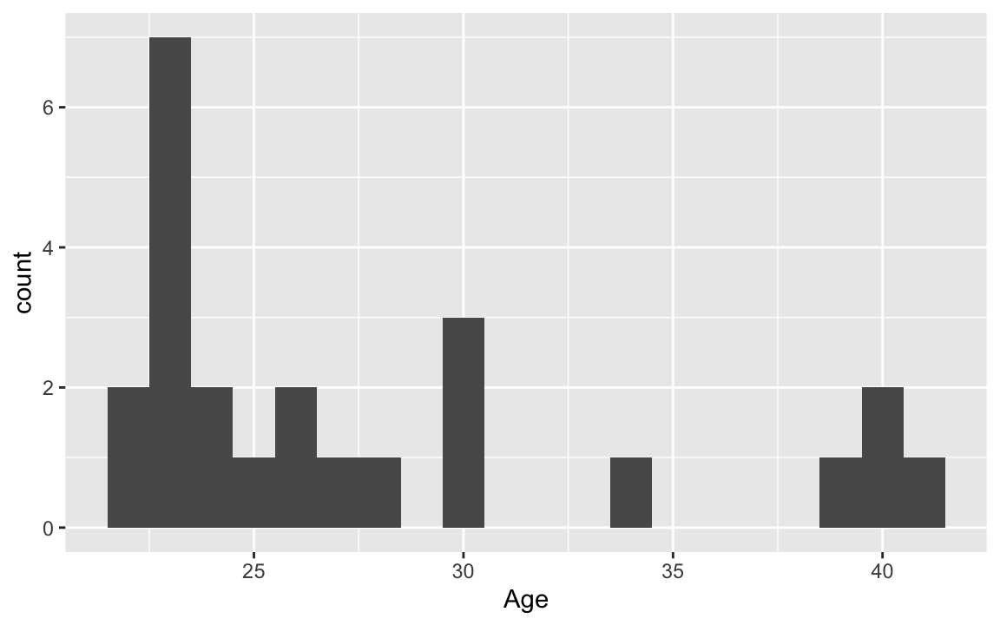
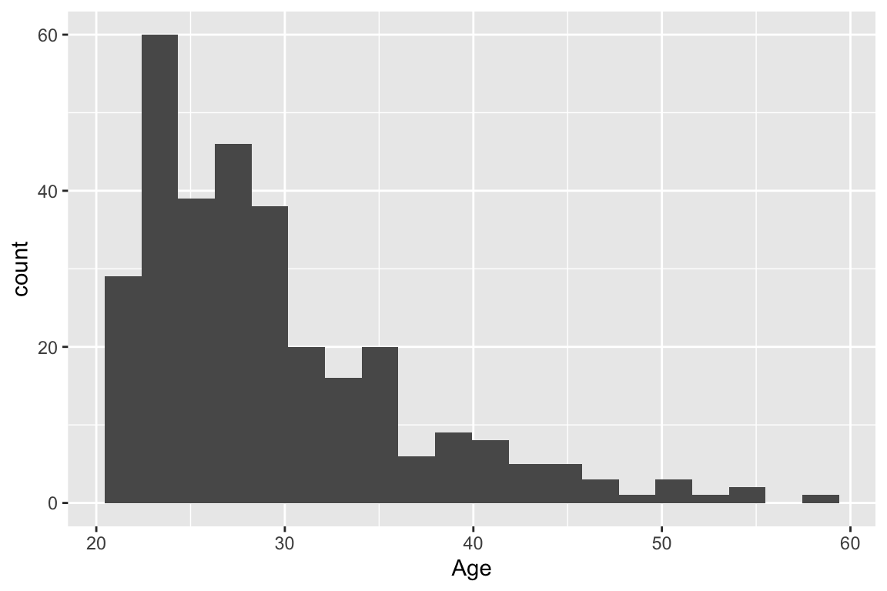

Data wrangling with dplyr (cont.)
Don’t forget to load the tidyverse package!
Recall that we are looking at data provided by Kaggle. In 2017, Kaggle conducted an industry-wide survey to establish a comprehensive view of the state of data science and machine learning. We will be looking at just a subset of the data.
Warm-up/Recap:
Write code to determine many different programming languages were recommended in the data:
Display a data frame of the respondents who were living in the United States and were at most 35 years old at the time of taking the survey.
Grouping by grouped operations
Sometimes, we want to look at a given statistic or create a new variable focusing on each level of a specific categorical variable. The group_by() function tells R to treat each unique level as a separate data set.
# A tibble: 4 × 2
FormalEducation mean_age
<chr> <dbl>
1 Bachelor's degree 31.9
2 Doctoral degree 35.9
3 Master's degree 33.0
4 Some college/university study without earning a bachelor's degree 25.8It’s always important to ungroup() after using group_by()! Otherwise, the grouping with carry on and could lead to potential errors in your future wrangling! Notice the differences in the outputs in the following examples:
datascience |>
group_by(Major) |>
mutate(mean_age = mean(Age))|>
mutate(mean_comp = mean(CompensationAmount)) |>
ungroup() |>
select(Major, mean_age, mean_comp) |>
arrange(Major)# A tibble: 102 × 3
Major mean_age mean_comp
<chr> <dbl> <dbl>
1 A humanities discipline 60 55000
2 A social science 34 50000
3 Biology 28.3 18550
4 Biology 28.3 18550
5 Biology 28.3 18550
6 Computer Science 28.4 1130131.
7 Computer Science 28.4 1130131.
8 Computer Science 28.4 1130131.
9 Computer Science 28.4 1130131.
10 Computer Science 28.4 1130131.
# ℹ 92 more rowsdatascience |>
group_by(Major) |>
mutate(mean_age = mean(Age)) |>
ungroup() |>
mutate(mean_comp = mean(CompensationAmount)) |>
select(Major, mean_age, mean_comp) |>
arrange(Major)# A tibble: 102 × 3
Major mean_age mean_comp
<chr> <dbl> <dbl>
1 A humanities discipline 60 604512.
2 A social science 34 604512.
3 Biology 28.3 604512.
4 Biology 28.3 604512.
5 Biology 28.3 604512.
6 Computer Science 28.4 604512.
7 Computer Science 28.4 604512.
8 Computer Science 28.4 604512.
9 Computer Science 28.4 604512.
10 Computer Science 28.4 604512.
# ℹ 92 more rowsPiping to ggplot()
Remember that when creating plots, ggplot() expects a data frame as its first argument.
We may sometimes need to wrangle data prior to visualizing it. We have two options (both have pros and cons):
- Wrangle the original data, store the resulting data frame as a new object or overwrite the previous one, and then refer to that data frame with
ggplot()
datascience_india <- datascience |>
filter(Country == "India")
ggplot(data = datascience_india, mapping = aes(x = Age)) +
geom_histogram(bins = 20)
- Wrangle the original data, and then directly pipe the result into
ggplot(), which knows to expect a data frame as its first argument:
# Notice that we don't specify the data parameter in ggplot()!
datascience |>
filter(Country == "India") |>
ggplot(mapping = aes(x = Age)) +
geom_histogram(bins = 20)
When do we use |> and when do we use + to connect lines of code?